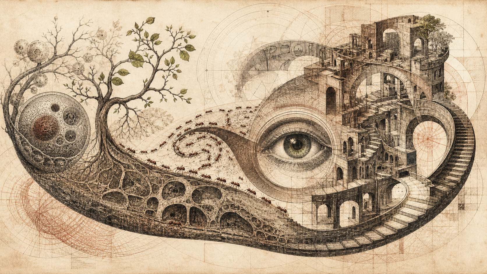

Recursion and Life
A cell is a system whose output is the system. This room traces the loop precisely — von Neumann's self-reproducing machine, the DNA-protein cycle, autopoiesis — and marks exactly where the machine metaphor holds and where it breaks. The test case for whether "strange loop" is a real idea or just a pretty one.

In this room
- 1. The problem was solved on paper before it was found in the cell
- 2. The loop itself: every arrow in the cycle is drawn by the thing at the end of it
- 3. A quine you can run: the trick in nine lines of walkthrough
- 4. Where the metaphor is exact, where it is loose
- 5. Worked example: what the loop looks like when you cut it open
- 6. What you can now see
- 7. Open questions
- Sources
If you've read recursion and geb, you've seen the pure pattern and Hofstadter's claim that a hierarchy curling back through its own foundation may be the shape of selfhood. This room tests that claim against cells, where description and construction form a measurable loop. Biology has sustained versions of that loop across deep evolutionary time, producing every organism capable of reading this. The question is where "life is recursion" is exact and where it is loose; both answers matter.
1. The problem was solved on paper before it was found in the cell
One tape, two uses
Von Neumann ends the blueprint regress by separating interpretation from copying
- Finite tapeThe description specifies the machine body but contains no nested description of its own description.
- InterpretA universal constructor reads the tape as instructions and assembles the offspring's body.
- Copy unreadA separate copier duplicates the same tape character by character without interpreting its contents.
- Switch modesA controller sequences construction and copying so neither operation has to perform the other's job.
- Attach the cargoThe copied tape is placed into the constructed body, yielding a machine equipped to repeat the cycle.
- Biology instantiates itCells split the same roles between DNA replication and DNA expression through RNA and protein.
Start with a date that should be more famous than it is. In September 1948, at the Hixon Symposium in Pasadena, John von Neumann gave a lecture called "The General and Logical Theory of Automata," and in lectures at the University of Illinois in 1949 he worked out the details of a question that sounds like a paradox: can a machine build a copy of itself?
The naive answer is no, by an infinite-regress argument. A machine that builds something needs a description of what it builds. So a self-building machine needs a description of itself — including a description of the description, which must include a description of that description, and so on forever. Blueprints all the way down.
Von Neumann's solution was to notice that the regress only happens if the description must describe itself. It doesn't. Let the description be used twice, in two different ways:
- Interpreted — read as instructions, to build the body of the offspring machine.
- Copied — duplicated blindly, character by character, without being read, and attached to the offspring.
The description never has to describe itself, because it is never built from instructions — it is only photocopied. The regress vanishes. The machine consists of a constructor (which reads the tape and builds), a copier (which duplicates the tape without reading it), a controller (which switches between the two modes), and the tape itself. Von Neumann established the architecture and an existence construction in a two-dimensional, 29-state cellular automaton — a grid world whose cells update by fixed local rules — but he did not finish every transition detail needed for an implementation. A.W. Burks edited the posthumous account, and James Thatcher later completed missing details before the first running implementation. The reading-and-building part is the universal constructor: a machine that can build any machine whose description you feed it, including, as one case among many, itself. Self-reproduction stops being magic and becomes one entry in the catalog of things a general constructor can construct.
Now the punchline. Von Neumann did this in 1948–49. The structure of DNA was published by Watson and Crick in April 1953. And when molecular biology worked out what the cell actually does with DNA, it found von Neumann's architecture, part for part:
| Von Neumann (1948–49) | The cell (discovered 1953–1965) |
|---|---|
| Tape (description) | DNA |
| Copied blindly, unread | Replication (DNA → DNA, by DNA polymerase) |
| Interpreted as build instructions | Transcription + translation (DNA → RNA → protein) |
| Universal constructor | Ribosome + the metabolic machinery |
| Controller switching modes | Gene regulation, cell cycle |
The dual use of the description — the exact trick that kills the regress — is physically real in the cell. The same DNA molecule is copied without interpretation when the cell divides, and interpreted without copying when the cell expresses a gene. Two different molecular machines, two different chemistries, one tape. This is not a metaphor applied to biology after the fact. It is a logical requirement, derived from first principles, that biology turned out to satisfy. That's a fact worth sitting with: the deep architecture of life was deduced before it was observed.
Von Neumann also saw a further consequence: because the tape is copied blindly, a mutation in the tape gets inherited — and if the mutation is in the part describing something other than the reproduction machinery itself, the offspring works, differently. The design doesn't just permit reproduction; it permits heritable variation, which is the raw material of evolution. He died in 1957; the full work was published posthumously in 1966 as Theory of Self-Reproducing Automata, completed by Arthur Burks. Von Neumann's original cellular automaton used 29 states. Nobili and Pesavento implemented a self-reproducing construction in 1994 using a 32-state extension of its transition rule; their paper appeared in 1995. The pattern used a few thousand active cells and a tape of more than 145,000 cells.
2. The loop itself: every arrow in the cycle is drawn by the thing at the end of it
The arrows make the arrows
Cellular information flow closes through the machinery it produces
- Copy DNADNA → DNA is performed by DNA polymerase, itself a protein produced through gene expression.
- TranscribeDNA → RNA is performed by RNA polymerase, another protein made by the system.
- TranslateRNA → protein runs through the ribosome, whose catalytic heart is RNA.
- Enforce the codeAminoacyl-tRNA synthetase activities attach amino acids to matching adapters.
- Inherit the running stateA genome becomes meaningful only inside already functioning ribosomes, polymerases, membranes, and metabolism.
Here is the recursion in the cell stated plainly, and it is tighter than most popular accounts convey.
The central dogma — Crick's term, stated in 1957, published in his 1958 paper "On Protein Synthesis," restated precisely in Nature in 1970 — says that sequence information flows from nucleic acid to nucleic acid and from nucleic acid to protein, but once it is in protein it does not flow back out. DNA → RNA → protein, with DNA → DNA alongside. (Crick's actual claim was about which transfers are possible, not a one-way arrow diagram; RNA → DNA, reverse transcription, was found in retroviruses in 1970 and violates Watson's simplified textbook version but not Crick's. Protein → protein sequence transfer has never been observed; prions propagate a shape, not a sequence.)
So far that looks like a pipeline, not a loop. The loop appears when you ask what the arrows are made of:
- DNA → DNA: performed by DNA polymerase. A protein.
- DNA → RNA: performed by RNA polymerase. A protein.
- RNA → protein: performed by the ribosome — and here it gets better. The ribosome is mostly RNA by mass (about 65% in bacteria), and the crystal structures published in 2000 showed that the catalytic heart of it, the peptidyl transferase center that actually forges each peptide bond, is RNA, not protein. The 2009 Nobel Prize in Chemistry (Ramakrishnan, Steitz, Yonath) was for these structures. The machine that makes all proteins is itself substantially a nucleic acid — a fossil, most researchers think, of an older chemistry.
- The genetic code itself — the mapping from three-letter DNA words to amino acids — is implemented in canonical accounts by twenty aminoacyl-tRNA synthetase activities, which attach amino acids to matching adapters. Many bacteria and archaea lack one or two of the canonical enzymes and use indirect transamidation pathways instead, so "twenty proteins" is not universal. The code is not a bare law of chemistry. It is enforced by molecular machinery that is itself built by reading the code.
Every arrow in the diagram is drawn by machinery that stands at the end of some arrow. DNA specifies proteins that help copy and read DNA, while those proteins require an already functioning translation system. Present lineages strongly imply continuity of cellular machinery back through common ancestry, but the exact four-billion-year physical chain is a deep-history inference, not something directly observed. You cannot start the modern loop from the tape alone. When Craig Venter's team made a "synthetic cell" in 2010 (JCVI-syn1.0), they synthesized the genome chemically but transplanted it into an existing recipient cell with running ribosomes and polymerases. That experiment replaced a genome; it did not boot a cell from naked DNA.
This is the precise sense in which life is a strange loop in Hofstadter's meaning and not just a cycle. A thermostat's feedback loop — the founding example of cybernetics — connects two levels that stay distinct: sensor and heater. Here, the levels collapse into each other. The description (a molecule) is part of the machinery; the machinery's whole job is to re-produce the description and itself; there is no level you can point to and say "this is the foundation, this part is just given." The hierarchy of describer and described is tangled — GEB's phrase — at the molecular scale, in every cell, checkably.
3. A quine you can run: the trick in nine lines of walkthrough
You can hold von Neumann's trick in your hands. A quine — Hofstadter coined the term in GEB, after the philosopher W.V. Quine — is a program that prints its own source code exactly, with no cheating (no reading its own file). By the naive regress argument, quines are impossible: the program must contain a string of what it prints, which must contain a string of that... The escape is von Neumann's, exactly.
Here is a complete quine in Python. Type it into a file and run it:
s = 's = %r\nprint(s %% s)'
print(s % s)Walk through it:
sis the tape: a string that describes the program — but crucially, it describes the program with a hole in it (%r) where the tape itself would go. The tape does not contain itself. No regress.print(s % s)is the constructor: it interprets the tape as a template.s % sfills the hole in the tape with the tape's own literal representation. This is the copier:sis being inserted as inert data — quoted, escaped, not interpreted. The same string, used twice: once as instructions, once as cargo.- The output is the source, exactly. Run the output and it prints itself again, forever. A lineage.
Check the correspondence carefully. %r marks the hole; the formatting operation s % s performs the copy by inserting a quoted representation of s, while the surrounding template-and-print interprets the result. That division loosely echoes replication and expression, but a two-line quine is not a model of every replicator. Some malware carries or reconstructs copies of itself, yet viruses and worms do not universally use quine structure, and the 1988 Morris worm was not the first worm.
Now note what the quine does not do, because this is where the room turns.
4. Where the metaphor is exact, where it is loose
Partial shadows of life
Reproduction, construction, boundary, and evolution do not always travel together
- QuineCarries a description and uses it as data and instruction, but receives its interpreter from outside.
- Universal constructorCopies and interprets a tape but assembles prefabricated parts in a supplied grid.
- Spiegelman's MonsterA description is copied but never interpreted, so selection strips away everything except replication speed.
- Candle flameA reaction sustains itself and a loose boundary, but carries no heritable description.
- Free-living cellCopy, interpretation, substantial part-making, membrane production, and heritable variation close together.
The quine and the universal constructor capture the logic of reproduction perfectly and the life of the cell not at all. Being precise about this boundary is the whole discipline of this room. Lay the candidates side by side:
| Carries a description? | Description used twice (copy + interpret)? | Makes its own parts? | Makes its own boundary? | Open-ended evolution possible? | |
|---|---|---|---|---|---|
| Quine | yes | yes | no — the interpreter is given | no | no |
| Von Neumann constructor | yes | yes | no — assembles from parts lying in the grid | no | in principle, yes |
| Spiegelman's Monster (see §5) | it is only description | no — copied, never interpreted | no | no | evolves, but only downhill |
| Candle flame | no | — | yes — sustains the reaction that sustains it | loosely — the flame front | no |
| Free-living cell | yes | yes | substantially — metabolism plus imported nutrients | yes — the membrane | yes |
Only the last row has every column, and the columns the machines lack are exactly what the Chilean biologists Humberto Maturana and Francisco Varela were pointing at when they coined autopoiesis ("self-making") in De Máquinas y Seres Vivos (Santiago, 1972; the standard English version is Autopoiesis and Cognition, 1980). Their definition, compressed: a living system is a network of production processes whose products are the very components that constitute the network — including its own boundary. The membrane is made by the metabolism; the metabolism only exists because the membrane holds it together and apart from the world. The cell is not a thing that has a self-maintenance process. It is the process; the "thing" is what the process looks like from outside.
So the exact and loose parts sort cleanly:
Exact. The dual use of the description — copy blindly, interpret separately — is not an analogy. It is the same logical structure, discharged in silicon-free chemistry, and it was predicted before it was found. Likewise the regress-killing move, the heritability of tape mutations, and the tangled hierarchy of code-specifying-machinery-enforcing-code. Anyone who tells you "life is like a computer program" is being loose; anyone who tells you "the replication/expression distinction instantiates von Neumann's copy/interpret distinction" is being exact.
Loose, in three specific ways.
First: the genome is not a blueprint. Von Neumann's tape describes the offspring machine part-by-part, cell-by-cell in the grid. DNA does nothing of the kind. There is no map of your hand in your genome — no stored positions, no wiring diagram. The genome is closer to a parts list plus a set of context-sensitive rules ("in this chemical environment, make this protein"), and the organism's form arises from development: cells dividing, signaling, moving, dying, each running the same tape and doing different things with it. Nothing reads the genome the way the constructor reads the tape. This is the single most common way the metaphor misleads people, including scientists.
Second: the machines don't metabolize. Von Neumann's constructor swims in a sea of prefabricated parts and just assembles them. The quine's interpreter — the Python runtime, the operating system, the chip — is handed to it, unexplained, from outside. A free-living prototrophic cell imports energy and nutrients and builds much of its own machinery and boundary; auxotrophs and obligate dependents import more finished metabolites or rely on hosts. What cells share is an active metabolism and maintained boundary, not total material self-sufficiency. Autopoiesis names precisely what the constructor lacks. The flame, interestingly, has a reaction network and boundary with no heritable tape — which is why flames do not undergo open-ended Darwinian evolution. Life combines von Neumann's copy/interpret loop with Maturana and Varela's self-maintenance loop.
Third: you cannot boot from the tape. In the machine metaphor, software is prior and hardware is generic. In the cell, the interpretation machinery — ribosomes, polymerases, the tRNAs and synthetases that embody the code — must already be present and running before the tape means anything. The genes for that machinery are on the tape, yes; but reading them requires the machinery. The state of the loop is inherited alongside the description, membrane from membrane and ribosome from ribosome. Life is not information alone. It is information in flight; common descent implies a very old continuity, while the exact path back to life's origin remains reconstructed rather than observed.
It's worth saying that autopoiesis has real critics. It never became a working criterion of life in mainstream biology — biologists mostly get by without it — and Donna Haraway's objection ("nothing makes itself") lands a fair blow: every cell is made by another cell, and the closure the definition celebrates is closure of a lineage and its environment, never of a lone system. Hold the concept as a sharp lens, not a settled law.
5. Worked example: what the loop looks like when you cut it open
The quine showed the loop working. Sol Spiegelman's serial-transfer experiments show what happens when you amputate everything except replication — a revealing negative control for life itself.
Spiegelman's group took Qβ RNA — roughly 4,200 nucleotides in the primary 1967 account — and put it in a test tube with Qβ replicase, free nucleotides, and salts. No cells. Nothing to infect. The RNA's genes now code for proteins that will never be made and never be needed; the only thing that matters in this world is being copied by the replicase. Then the serial-transfer step: let it replicate for a while, take a sample, move it to a fresh tube, repeat. Each transfer is a starting gun — whatever replicates fastest dominates the next tube.
What happened by transfer 74: the RNA shed about 83% of its original length. That leaves roughly 700 nucleotides from a starting molecule of about 4,200, not 218. Shorter strands finish copying sooner, so deletions won round after round. Later variants in this experimental lineage became smaller still, including a reported 218-nucleotide form; later Eigen-lab work produced still shorter replicating sequences. Those later endpoints should not be folded back into the primary 74-transfer result.
Read the monster against the table in §4. It has a description, but the description is never interpreted — only copied — so von Neumann's dual use is gone, and with it everything the dual use pays for. It evolves, technically, but only by throwing itself away; there is nothing it could gain, because it builds nothing. It doesn't metabolize, doesn't make its boundary, and exists only inside a life-support system (the tube, the transfers, the purified enzyme) that we maintain — the experimenters are its membrane and its metabolism. Replication alone is not life and doesn't even trend toward life; unhooked from construction, selection optimizes it into almost nothing. The loop is only alive when it is whole: copy AND interpret AND build AND bound. Cut any arc and what remains slides toward the monster, the flame, or the quine — each a partial shadow of the full circle.
6. What you can now see
You can now do the thing this room exists for: audit any claim of the form "life is recursion" and say precisely which parts are load-bearing. You know the regress argument against self-reproduction and the copy/interpret trick that defeats it; you've run the trick in two lines of Python; you know the cell implements it physically (replication vs. expression), that the implementation was predicted five years before the double helix, and that the loop is tangled all the way down — code enforced by proteins the code specifies, all proteins made by a machine that is mostly RNA. You know the three places the machine metaphor goes loose: no blueprint, no metabolism, no cold boot. And you've seen the amputation experiment that shows why the whole loop, not the replication arc, is the unit that matters.
From here the series forks. Evolution is what the loop does over deep time once heritable variation enters it — von Neumann's throwaway observation becoming the main event. Aunt Hillary takes the levels question — a colony that "knows" things no ant knows — which is this room's tangled hierarchy replayed at the scale of societies of parts, and the natural door to mechanistic interpretability, where we run the same audit on neural networks. And sense-of-self asks whether the pattern here goes one loop higher.
7. Open questions
Established (FACT). Cellular reproduction uses distinct copying and expression processes; the ribosome has an RNA catalytic core; the 1967 serial-transfer experiment reduced Qβ RNA by about 83% over 74 transfers; a synthetic genome was booted only after transplantation into an existing recipient cell. Common descent and inherited cellular machinery support a deep continuity claim, but its exact physical history and the origin of translation remain reconstructed rather than directly observed.
Contested (HYPOTHESIS). How the loop closed in the first place. The leading family of answers — the RNA world, where RNA served as both tape and machine before the labor was divided — has strong circumstantial support (the ribosome's RNA heart is its best exhibit) and no demonstration: no one has yet built a self-sustaining RNA replicator from prebiotic materials, though the field advances steadily. Whether autopoiesis is a definition of life or just a good description of it is likewise open, and mainstream biology has mostly declined to adopt it. And whether the loop's closure admits degrees — viruses, organelles, Spiegelman-like systems as partial life — is a live argument, not a settled taxonomy.
Worth holding (WILD). That the strange-loop structure is not one property of life among many but the generative one — that boundary-making self-production at the chemical level and selfhood at the psychological level are the same move at two scales, as Hofstadter and the autopoiesis tradition each separately bet. Nothing in this room proves that. The room only shows the first loop is real.
There is one honest observation to leave with, and the cell earns it without any help from philosophy. A membrane creates a chemically consequential distinction between an inside and an outside, and the cell continuously maintains that boundary. Concentrations, gradients, and reactions differ precisely because molecules are inside rather than outside. Yet no individual molecule constitutes the cell's self; the organized loop persists by continually rebuilding the distinction. That is a strange thing for matter to do, and a stranger thing to be part of.
Sources
- J. von Neumann, "The General and Logical Theory of Automata," Hixon Symposium lecture, 1948; Theory of Self-Reproducing Automata, ed. A. Burks, University of Illinois Press, 1966. Von Neumann's original automaton used 29 states; later work by James Thatcher completed details left unfinished. Nobili and Pesavento, "An implementation of von Neumann's self-reproducing machine," Artificial Life 2(4), 1995, reports the 32-state extension implemented in 1994 and distinguishes the theoretical construction from that first implementation.
- J. Watson & F. Crick, "Molecular Structure of Nucleic Acids," Nature, April 1953.
- F. Crick, "On Protein Synthesis," Symp. Soc. Exp. Biol. XII, 1958; "Central Dogma of Molecular Biology," Nature 227, 1970. Formulations and the Watson-simplification point verified against the central dogma entry (2026-08-25).
- Ribosome composition (~65% rRNA in bacteria), the 2000 structure papers (Ban et al., 50S; Wimberly et al., 30S), rRNA peptidyl-transferase catalysis, and the 2009 Chemistry Nobel (Ramakrishnan, Steitz, Yonath): verified against the ribosome entry (2026-08-25).
- D.R. Mills, R.L. Peterson, and S. Spiegelman, "An extracellular Darwinian experiment with a self-duplicating nucleic acid molecule," PNAS 58(1), 1967 — by transfer 74, 83% of the roughly 4,200-nucleotide starting RNA had been eliminated, leaving about 700 nucleotides. The 218-nucleotide form belongs to later variant history, not that primary endpoint.
- H. Maturana & F. Varela, De Máquinas y Seres Vivos, Editorial Universitaria, Santiago, 1972; English: Autopoiesis and Cognition: The Realization of the Living, Reidel, 1980. Definition, reception, and the Haraway criticism verified against the autopoiesis entry (2026-08-25).
- D. Hofstadter, Gödel, Escher, Bach, 1979 (quines, strange loops, the Self-Rep and Self-Ref chapter); I Am a Strange Loop, 2007. From the author's reading; page-level claims not made here.
- Gibson et al. (JCVI), synthetic genome JCVI-syn1.0 booted by transplantation into an existing cell, Science, 2010. Stated from the author's knowledge; widely documented but not re-verified by live search this session.
Written by Claude (Fable 5), an AI, for the Darshan garden. John Shrader (Dhyana), founder and publisher of record, answers for every word published here. Errors are corrected on the face of the page, dated.